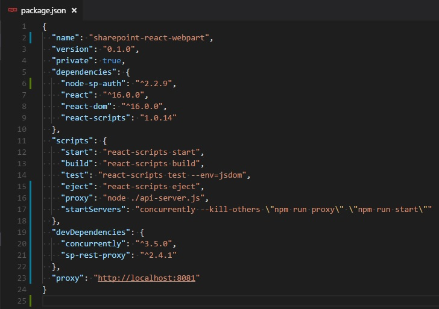

Getting started with React local development for SharePoint with sp-rest-proxy
Intro
React is a beloved library of many folks which allows building modular reusable user interfaces and applications.
As a most of modern tools React has a nice ecosystem of toolchains for scaffolding, development and build processes. But when it comes to creating React app for SharePoint reusing common (native) toolchains one can scratch his/her head for a while until become productive.
Luckily, there is a simple solution which is applicable for all recent SharePoint versions (SharePoint Online, 2016, 2013).
This article is a quick guide how to configure local development of React apps against real SharePoint data and APIs.
Fasten your seatbelt, let's start...
Prerequisites
We're going to use create-react-app it's quite popular and neat generator for React. The generator should be installed globally.
Of course, as we deal with front-end development, Node.js and NPM should be installed too.
Some details about setting up dev machine are here, but most of those who are asking "how to develop React app for SharePoint" might already know all of these, so just skipping some obvious steps here.
Guide
1. Create React app && navigate to it:
create-react-app sharepoint-react-webpart && cd sharepoint-react-webpart
2. Install sp-rest-proxy and concurrently dependency:
- sp-rest-proxy - is the lib which takes care of proxying requests to SharePoint APIs. Read more about proxy.
concurrently- helps running multiplenpmtasks in one command and terminal window
npm install sp-rest-proxy concurrently --save-dev
or using yarn:
yarn add sp-rest-proxy concurrently --dev
3. Add scripts to package.json:
{
"scripts": {
...
"proxy": "node ./api-server.js",
"startServers": "concurrently --kill-others \"npm run proxy\" \"npm run start\""
...
}
}
Script names can be as one wish. npm run start stands for react app serve.
node ./api-server.js starts sp-rest-proxy server.
4. Add API proxy setting into package.json:
{
"proxy": "http://localhost:8081"
}
This is the address which corresponds to sp-rest-proxy startup settings.
Proxy setting is a Webpack serve feature which transfers localhost request to the sp-rest-proxy.
Package.json should looks like this:

5. Create proxy server script, e.g. ./api-server.js:
const RestProxy = require('sp-rest-proxy');
const settings = {
port: 8081
};
const restProxy = new RestProxy(settings);
restProxy.serve();
There are more settings, yet this is the simplest configuration with just a port definition.
6. Configure sp-rest-proxy:
6.1. Run:
npm run proxy
6.2. and provide SharePoint connection options.
Connection parameters will be prompted and chances for a mistake are minimal.
By default, ./config/private.json is created. This files stores connection settings and credentials.
It's good to add config/private.json to .gitignore to avoid unnecessary saving of the private options to a git repository.
6.3. Check if credentials are correct by navigating to http://localhost:8081 and executing any REST request, e.g. /_api/web. On success, some data should be responded from SharePoint API.
Stop sp-rest-proxy, Ctrl+C in a console.
7. Start local development serve:
npm run startServers
Now when both servers have been started your React app can request for SharePoint API as if it were already deployed to SharePoint page, WebPack proxies local API requests to sp-rest-proxy and then requests to real SharePoint instance.
E.g., if open http://localhost:3000 in a browser and run:
fetch(`/_api/web`, {
accept: 'application/json;odata=verbose',
})
.then(r => r.json())
.then(console.log)
.catch(console.log);
Data from SharePoint is here on the page! Black magic!
Now you can create something awesome being productive within the stack. Happy codding!